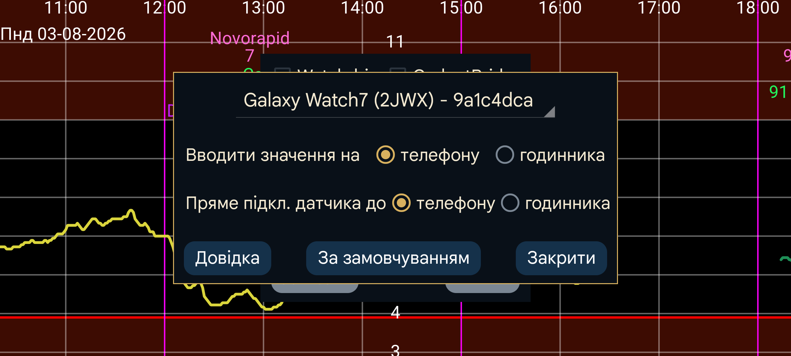

ar be de es fr hi it ja ko nl pl pt ru tr uk uz zh en
Введення чисел (значень) на годиннику: вводити на годиннику значення інсуліну, вуглеводів і активності через друге меню→«Сума», а не на телефоні. Не вмикайте, якщо хочете сканувати NovoPen телефоном. Якщо телефон забуто, те саме можна зробити на годиннику через ліве меню→Датчик→Перемкнути.
Пряме з’єднання датчик–годинник: визначає, чи має годинник підключатися до датчика безпосередньо. Параметр можна змінити лише тоді, коли дані телефона й годинника синхронізовані. Використайте «Клон→Синхронізувати» та «Reinit» на обох пристроях. Якщо ви вийшли з дому лише з годинником і забули ввімкнути пряме з’єднання, на годиннику натисніть ліве меню→Датчик→ Перемкнути . Годинник напряму підключиться до датчика. Коли телефон знову опиниться в зоні Bluetooth, він отримає повідомлення припинити з’єднання з датчиком і змінити напрямок дзеркального з’єднання.
За замовчуванням: скидає параметри з’єднання до початкових. Це стосується налаштувань у лівому меню→Клон на годиннику та лівому середньому меню→Клон на телефоні, зокрема «Тільки активний» і «Скани»,. Натисніть кнопку, якщо параметри випадково змінилися, наприклад від води в душі або під час сну. Якщо скидання виконується перевстановленням версії для годинника чи очищенням її даних, дзеркальне з’єднання на телефоні також потрібно видалити.
Спеціальна версія Juggluco може працювати безпосередньо на годиннику Wear OS. Для сканування датчика потрібен смартфон Android із NFC; дані передаються на годинник через TCP. Далі можливі два варіанти:
датчик залишається підключеним до смартфона, а смартфон надсилає кожне отримане через Bluetooth значення на годинник через TCP;
датчик підключається безпосередньо до годинника Wear OS. Для цього потрібен годинник із якісним Bluetooth-зв’язком.
Зображення наведено на сторінці https://www.juggluco.nl/JugglucoWearOS
Щоб усе налаштувати:
переконайтеся, що Bluetooth і Wi-Fi працюють на годиннику та телефоні;
перевірте, що на годиннику достатньо вільного сховища й оперативної пам’яті. Якщо місце закінчиться в критичний момент, Juggluco може знадобитися перевстановити;
спочатку налаштуйте телефонну версію Juggluco для роботи з датчиком. Кілька разів відскануйте датчик з увімкненим «Використовуйте Bluetooth;
установіть версію Juggluco для Wear OS на годинник і запустіть її;
на телефоні відкрийте ліве меню→Дивитися→Налаштування Wear OS. Ваш годинник має з’явитися у списку.
Якщо все пройшло успішно, в обох екземплярах Juggluco буде налаштовано TCP-з’єднання, а всі дані з телефона почнуть надсилатися на годинник. Якщо Juggluco використовувалася давно, передавання великого обсягу може тривати довго. Перевірити конфігурацію TCP можна в діалозі дзеркала: на телефоні ліве середнє меню→Клон, на годиннику — ліве меню→Клон. Має бути з’єднання з тим самим ID, який показано для годинника у списку. На годиннику воно також повинно містити IP-адресу телефона. Якщо запису немає або на стороні годинника немає IP, знову натисніть «Запустити додаток для годинника». Якщо це не допомогло, перевірте Bluetooth і телефонну програму, яка відповідає за зв’язок із годинником. Якщо пізніше правильна IP-адреса не показується, на телефоні вимкніть і знову ввімкніть зовнішнє з’єднання — Wi-Fi або мобільні дані.
Якщо все працює, на версії Juggluco для годинника відображаються ті самі дані, що й на телефоні. Кожне нове значення, отримане телефоном, передається через TCP. Деякі параметри, наприклад одиниця, пороги сигналів і нагадування, також передаються. Подальші зміни слід робити вже на годиннику.
Якщо годинник має добрий Bluetooth і ви хочете отримувати значення без телефона, можна підключити Juggluco на годиннику безпосередньо до датчика. Після передавання всіх даних позначте «Пряме з’єднання датчик–годинник». Це «Використовуйте Bluetooth» вимикає на телефоні й вмикає на годиннику. Потокові значення тепер надсилаються з годинника на телефон, що видно в діалозі дзеркала. Параметр не можна змінити, поки годинник і телефон не синхронізовані.
Якщо датчик напряму підключений до годинника, а його значення надсилаються на смартфон, скановані дані мають передаватися з телефона на годинник, а потокові дані — бути синхронізовані перед скануванням датчика в Juggluco; параметри автоматично налаштовано саме так. Інакше старі значення можуть повернутися на годинник або оновлена інформація автентифікації не буде передана, що спричинить помилки ключа розблокування .
Змінювати з’єднання також слід лише після синхронізації. Дані на телефоні й годиннику мають бути повними копіями, за винятком того, що можна не передавати введені значення.
Під час першого передавання великого обсягу зі смартфона годинник можна поставити на зарядний пристрій: мій годинник у цей момент вмикає Wi-Fi.
З’єднання годинника з телефоном — це адаптація дзеркального з’єднання між телефонами з Juggluco та комп’ютерами з Juggluco Server. Коли воно автоматично створюється описаним вище способом, додаються такі можливості:
IP-адреса іншої сторони визначається автоматично. Зазвичай безпосередньо змінювати дзеркальне з’єднання не потрібно; використовуйте ліве меню→Дивитися→Налаштування Wear OS.
Якщо Wi-Fi між телефоном і годинником не працює, Juggluco переходить на TCP через Bluetooth. Крім першого передавання великого обсягу, Wi-Fi на годиннику можна вимкнути.
Якщо Juggluco на телефоні й годиннику не обмінюються даними, перевірте:
Bluetooth увімкнено на годиннику й телефоні; Wi-Fi можна вимкнути;
супровідна програма годинника показує, що годинник підключений до телефона;
у лівому меню→Клон на годиннику й лівому середньому меню→Клон на телефоні є автоматично створений запис з ідентифікатором годинника — тим самим, що показано в лівому меню→Дивитися→Налаштування Wear OS на телефоні;
натискання «Reinit» та/або «Синхронізувати» в лівому меню→Клон на годиннику може допомогти;
іноді те саме потрібно зробити на телефоні, а потім ще раз на годиннику;
може допомогти вимкнення й повторне ввімкнення Bluetooth на телефоні або годиннику. Після цього знову натисніть «Reinit» й «Синхронізувати» на годиннику;
іноді потрібно так само перезапустити Wi-Fi або мобільні дані;
іноді Bluetooth відновлюється лише після перезапуску телефона та/або годинника;
можливо, параметри дзеркального з’єднання випадково стали неправильними. Відновіть їх через ліве меню→Дивитися→Налаштування Wear OS→За замовчуванням на телефоні. Це також підключає датчик до телефона замість годинника. Дані, наявні лише на годиннику, буде перезаписано;
якщо нічого не допомогло, перевстановіть версію для годинника й почніть заново. Тоді на телефоні потрібно видалити наявне з’єднання годинника в лівому середньому меню→Клон.
Якщо даних немає на телефоні, але вони є на годиннику, відновлення складніше: спочатку потрібно якимось чином створити робоче дзеркальне з’єднання, щоб отримати дані на телефоні.
Juggluco для Wear OS містить циферблат, який показує поточну глюкозу, час і до чотирьох комплікацій. Виберіть його, наприклад у супровідній програмі годинника в розділі завантажених. Зазвичай після пробудження екрана показується останнє значення. В ambient-режимі постійного екрана воно оновлюється лише зі зміною хвилини, натисканням кнопки або підняттям руки, тому може запізнюватися до однієї хвилини. На деяких новіших годинниках, наприклад Samsung Galaxy Watch 7 і Watch Ultra, цей циферблат недоступний, оскільки виробник не дозволяє програмовані циферблати задля заощадження батареї.
Juggluco 8.2.0 і новіші містять комплікації зі значенням глюкози, стрілкою та стрілкою зі значенням, сумісні також із Wear OS 5. Їх можна використовувати з будь-яким циферблатом, який приймає слот комплікації малого або великого зображення, наприклад Time and Track або Watchface for Juggluco. Власний циферблат можна створити у Watch Face Studio.
Третій варіант — увімкнути Плав. глюкоза в налаштуваннях Juggluco на годиннику. За наявності потрібних дозволів значення показується поверх інших програм. Так поточну глюкозу видно з будь-яким циферблатом або програмою для відстеження активності. Докладніше див. у телефонній версії Juggluco: ліве меню→Налашт.→ Плав. глюкоза →Довідка.
Із супровідної програми можна знову надсилати дані іншим пристроям через інтернет, як описано в лівому середньому меню→Клон. Також можна підключити годинник безпосередньо до інтернет-сервера, а через нього — до телефона послідовника, як описано тут: https://www.juggluco.nl/Juggluco/cmdline/watch